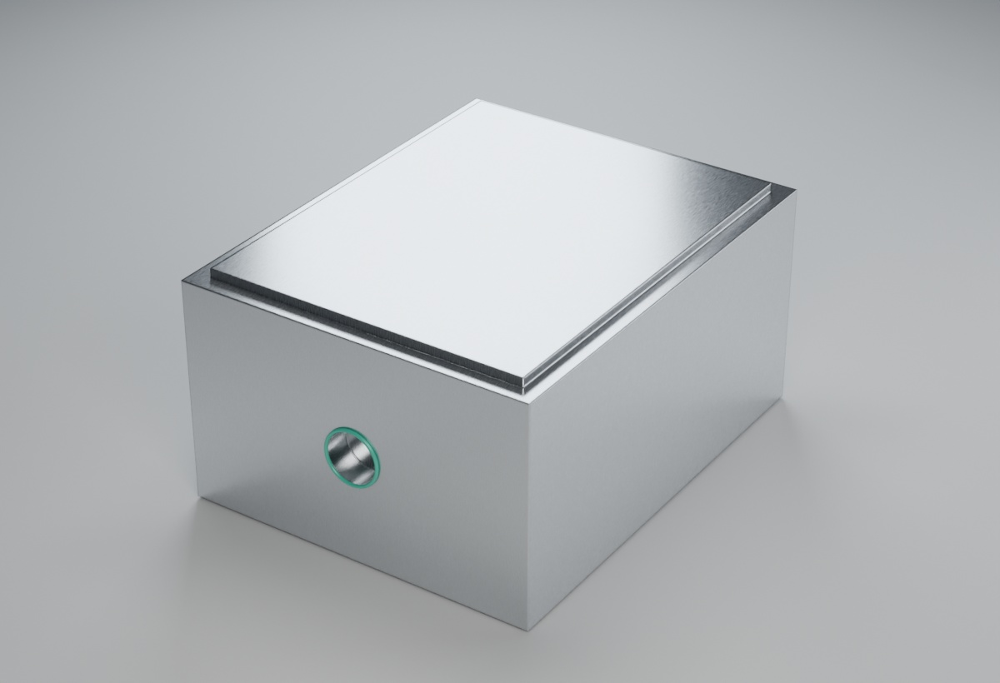
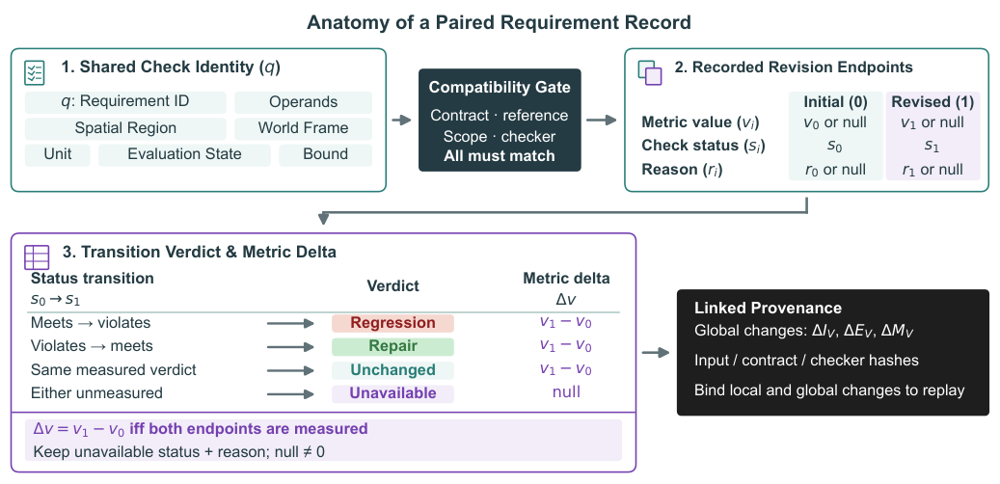
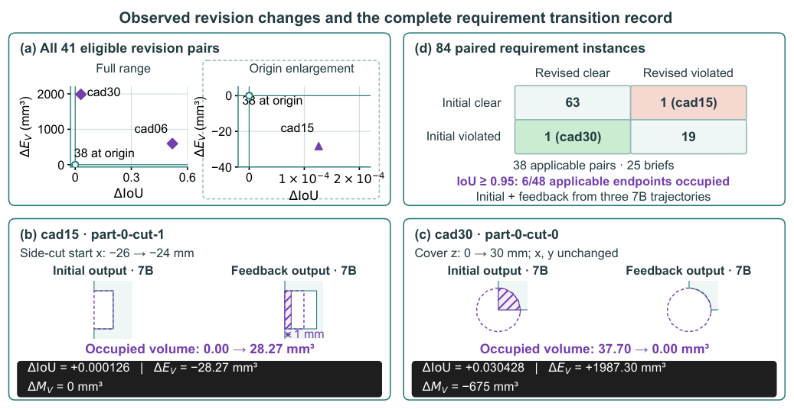
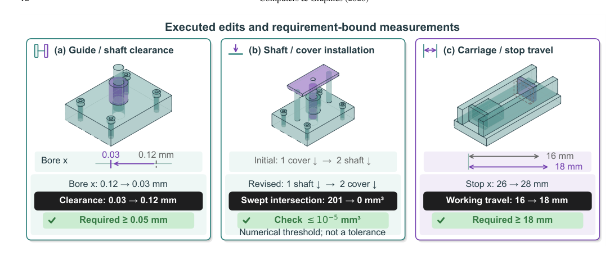

Inside the Ø6 mm side bore
The bore opens at the side face. In the revision, a 1 mm web covers its entrance.

Both sections cut through the bore axis at y = 0. Dimensions are in mm. The rust-colored hatching marks material inside the required void.
View the paper’s graphical abstractSide bore, shaft clearance and assembly order
The bore measurements come from a recorded cad15 edit. The two shaft examples use controlled geometry.
The edit left a 1 mm web across the entrance.
Compare the two sections → How much clearance is left? 0.03 mmWith the shaft axis offset by 0.12 mm, the gap falls below the 0.05 mm minimum.
Adjust the shaft offset → Does the cover block insertion? ≈ 201 mm³The shaft clears the cover in its final position. With the cover installed first, their volumes overlap during insertion.
Switch the assembly order →Abstract
Existing CAD benchmarks evaluate geometric similarity, requirement satisfaction, and edit preservation using coarse voxel/mesh overlap or point-cloud Chamfer distance. However, in precision mechanical engineering, a generated model can preserve 99% of its occupied material while placing a mounting bore on the wrong axis, blocking a vital fluid passage, or fusing components that should remain distinct. An overlap score describes a global geometric relation; it does not specify which local requirements are satisfied.
Hard-CAD brings these measurements into a contract-based diagnostic record: it pairs the same declared requirement across revisions, links local changes to global material differences, retains unavailable checks, and supports executable replay. We analyzed outputs from 30 modeling briefs under two local agent conditions, obtaining 41 eligible revision pairs. In one revision, a previously clear side-cut gains 28.27 mm³ while intersection-over-union (IoU) improves and total extra material decreases, because more material is removed elsewhere. In another, a void clears while extra material grows. The paired records identify the affected requirements and quantify both changes.
cad15 before and after the edit
The first two rows measure the whole part against the reference. The last two measure material inside each of the two cuts.
| Evaluation Metric | Initial Candidate | Revised Candidate | Delta / Observed Change | Conclusion |
|---|---|---|---|---|
| B-Rep IoU | 0.229885 | 0.230011 | +0.000126 ↑ | Overlap increased |
| Total Extra Volume | 39,715.73 mm³ | 39,687.45 mm³ | -28.27 mm³ ↓ | Less excess material |
Req. 1: part-0-cut-0 |
FAIL (38,059 mm³) | FAIL (38,003 mm³) | -56.55 mm³ trimmed | Still failing |
Req. 2: part-0-cut-1 (Side-Cut) |
PASS (0.00 mm³) | FAIL (28.27 mm³) | +28.27 mm³ filled | Side bore blocked |
Scroll sideways to see all columns →
Table 1. Paired diagnostic measurements for brief cad15. Total extra material decreased by approximately 28.27 mm³ overall, masking that the agent filled an existing valid side cut.
Interactive 3D Geometry Inspector
FreeCAD B-Rep • WebGLInspect display meshes derived from the CAD geometry evaluated in the manuscript; measurements are computed from B-Rep solids. Rotate with left mouse button, pan with right mouse button, and zoom with scroll wheel.
Feedback revision: IoU improved +0.000126, but side-cut filled with 28.27 mm³ unwanted material.
Translucency is a display aid for the selected mesh; measurements come from the B-Rep, not the rendered image.
Same final pose, different insertion paths
In the paper's controlled assembly, the final solids do not interfere. The prescribed insertion path can still cross the cover. Compare the two declared assembly orders.
Conceptual animation, not the tested CAD geometry or a physics simulation. The red marker illustrates a swept-path conflict, not its spatial extent.
Swept intersection
With the cover in place first, the prescribed shaft insertion crosses solid material, although the final pose has zero interference.
When a global score misses a local failure
Move the axis of the controlled shaft–guide example. The cross-section is schematic; the curve is calculated from the paper’s analytical construction.
Show or hide the interactive animation
Schematic, not to scale. The model applies only before contact (e < 0.15 mm).
The bore radius is 5.15 mm and the shaft radius is 5.00 mm. The nominal clearance falls linearly as the axes separate.
Nominal geometry only. Independent ±0.01 mm radius bounds give a 0.01 mm worst-size gap at e = 0.12 mm; these are design bounds, not confidence intervals.
Show the mathematical derivation
Let V ≈ 91,975.16 mm³ be the equal occupied volume and Δ(e) the symmetric difference. Then I(e) = (2V − Δ)/(2V + Δ), where Δ = 2h[πR² − A(R,e)] and A(R,e) = 2R² arccos(e/2R) − (e/2)√(4R² − e²). Here h = 20 mm and R = 5.15 mm. This derivation is restricted to the noncontact interval.
Contract-Based Diagnostic Architecture
Hard-CAD decouples requirement evaluation into three deterministic phases: formal contract specification, analytical B-Rep kernel measurement, and paired differencing.

Figure 2. Execution architecture. Human design briefs are codified into declarative contracts specifying coordinate frames, units, and geometric regions. The FreeCAD Open CASCADE kernel computes solid differences under declared numerical conditions, producing diagnostic artifacts.
Schema Contracts
Requirements are declared as YAML schemas with explicit coordinate frames (world/local), units (mm), and keep-out or bounding geometries.
Kernel Verification
B-Rep Boolean operations compute geometric quantities; 10⁻⁶ mm³ is the cut-occupancy numerical check threshold, not a manufacturing tolerance. Display tessellation does not enter these volume checks.
Paired Differencing
Records identify requirement transitions (PASS → FAIL) alongside global signed material changes, isolating defect regressions from repairs.
Empirical Evaluation
Across 30 briefs, the analysis retains 41 eligible revision pairs and 84 paired cut requirements. The results describe this cohort and do not estimate prevalence in industrial practice:


Which requirements changed across revisions?
The 84 requirement transitions are paired instances across 38 applicable revision pairs and 25 briefs. They are not 84 independent industrial mechanisms.
Select a row to inspect its meaning. Counts are from the requirement-level analysis, not the separate pair-level transition table.
Experimental protocol and limitations
Sixty trajectories were generated from 30 authored briefs under two local agent conditions. Forty-one pairs passed the primary eligibility criteria; 38 had applicable cut requirements. Of the 41 pairs, 34 retained identical program hashes and four more were volumetrically unchanged. The feedback experiments use different cohorts and budgets and cannot be pooled into these counts.
A retrospective 22-document audit found 13 explicit-unit dimension triples and recovered 12 of them with no unmatched outputs. The same cohort informed the extraction rule; this is not held-out semantic binding accuracy. Product, feature and frame identification remain open.
Limitations and next experiments
Future work needs independently specified occurrences, features and states, ideally with native constraints or semantic PMI as held-out references. A controlled repair study should share its first proposal, hold budget and controller fixed, and include withheld checks. Rotation, deformation, loads and manufacturing require further state models and checks.
A map of ideas
Explore related work, the design of Hard-CAD, and the evidence connecting them.
Open questions from the manuscript
Connections indicate conceptual relationships described in the paper; they do not imply a historical lineage, direct comparison, or measured superiority.
Reproducibility & Usage
Choose a path: open the recorded reports immediately, or use the full evaluator source and a compatible FreeCAD Python interpreter to replay the geometry.
A browser is enough to open the bundled cad15 and cad30 reports. These files let you inspect recorded outcomes without recomputing geometry.
3D comparison studio ↗ Interactive evidence replay ↗ Process pump demo → cad15 report ↗ cad30 report ↗The full evaluator source is required: the pinned website repository contains the page and example bundles, but no installable SDK. Obtain an authorized evaluator source checkout or an approved public package before following the steps below.
Environment and installation checklist
- Use Python 3.10 or newer for the evaluator and a separate Python environment. The SDK uses the standard library for JSON contracts; YAML contracts additionally require PyYAML ≥ 6, < 7.
- Install FreeCAD and identify a Python executable that can import both FreeCAD and Part. The documented development configuration is FreeCAD 1.1.1 with Open CASCADE 7.8.1 on Windows. A regular system Python may not include FreeCAD.
- From the evaluator source root, install its local package with python -m pip install ".[yaml]". Replace FREECAD_PYTHON in the example with the actual FreeCAD-capable executable path, quoted if it contains spaces.
- Replay into a new output directory. The demo reconstructs and checks recorded cad15/cad30 examples; inspect the generated index.html and result files. A candidate requirement failure is an observed result, not necessarily a failed replay.
For the full CAG test and evidence audits, the source guide additionally lists pytest ≥ 8, jsonschema ≥ 4.18 and PyMuPDF ≥ 1.24. Record Python and package versions; these minimum versions are not a complete locked environment.
Use the Agent prompt tab for an environment-aware, copyable setup request. It asks the agent to identify the source and CAD runtime, use fresh outputs, and report any missing prerequisites.
# Run from the full evaluator source checkout, not the website-only repository. python -m venv .venv # Activate .venv using the command for your operating system. python -m pip install ".[yaml]" # Replace FREECAD_PYTHON with a Python executable that imports FreeCAD and Part. # Choose a new output directory. Quote the executable path if it contains spaces. python -m hardcad demo --output paper-demo --cad-python FREECAD_PYTHON # Open paper-demo/index.html and inspect the recorded outcomes.
Please help me reproduce the recorded Hard-CAD cad15 and cad30 examples on this computer. 1. Inspect the available files and documentation. Identify whether I have the full evaluator source (including pyproject.toml and the hardcad package) or only the website/example bundle. If evaluator source is missing, explain how to obtain an authorized copy and stop before installation. 2. Check Python (3.10 or newer), create an isolated environment, and install the evaluator from its local source with YAML support. Record actual Python and dependency versions. 3. Locate a FreeCAD Python executable and verify that it can import FreeCAD and Part. The documented development configuration is FreeCAD 1.1.1 / Open CASCADE 7.8.1 on Windows. If it is unavailable, report what is missing rather than guessing a path. 4. Run the documented recorded-example demo using that executable and a new output directory. Open the resulting index.html and summarize the cad15 and cad30 measurements, statuses, output paths, and any failures. Distinguish an intentionally failing candidate requirement from a replay or infrastructure failure. 5. Cite the local documentation and record the commands and versions used. Do not use private corpora or paid model calls, overwrite existing results, modify a scorer, publish anything, or push changes without my explicit instruction.
from hardcad import diagnose
# Run contract diagnostics against candidate and reference geometry
report = diagnose(
candidate="candidate_v2.step",
reference="reference.step",
brief="brief.yaml",
cad_python="FREECAD_PYTHON" # Replace with a FreeCAD-capable Python executable
)
# Export interactive report
report.to_html("diagnosis.html")
print(report.summary())
schema_version: hardcad.contract.v1
unit: mm
frame: world
state: recorded_static_pose
requirements:
- id: part-0-cut-0
kind: keep_out
region:
kind: box
origin: [-23, -18, 2]
size: [46, 36, 23]
tolerance_mm3: 1.0e-06
- id: part-0-cut-1
kind: keep_out
region:
kind: cylinder
origin: [-25, 0, 12]
radius: 3
height: 3
axis: [1, 0, 0]
tolerance_mm3: 1.0e-06
Citation
@misc{hardcad2026,
author = {Huang, Hikoyan and Zhang, Jiayao},
title = {Hard-CAD: Contract-Based Diagnostics for Generated CAD Geometry},
year = {2026},
url = {https://hard-cad.github.io/hard-cad/},
note = {Submitted manuscript}
}